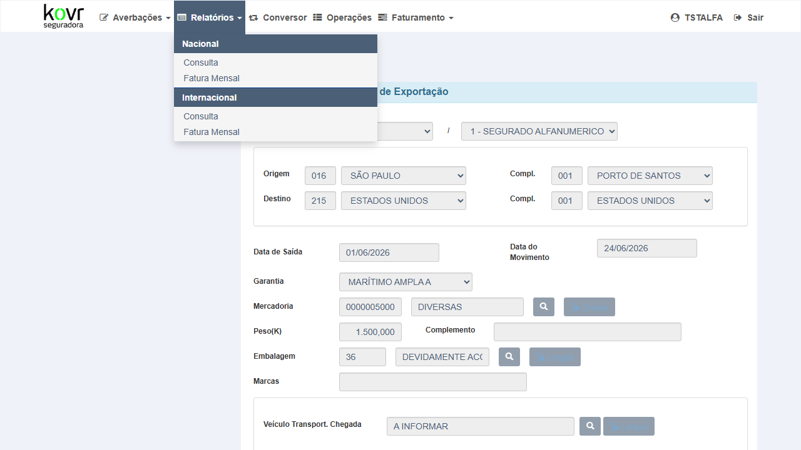
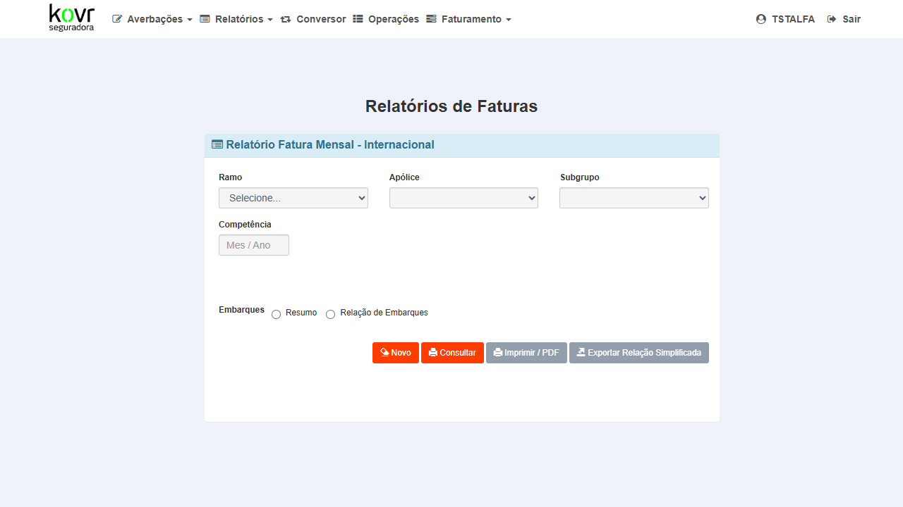
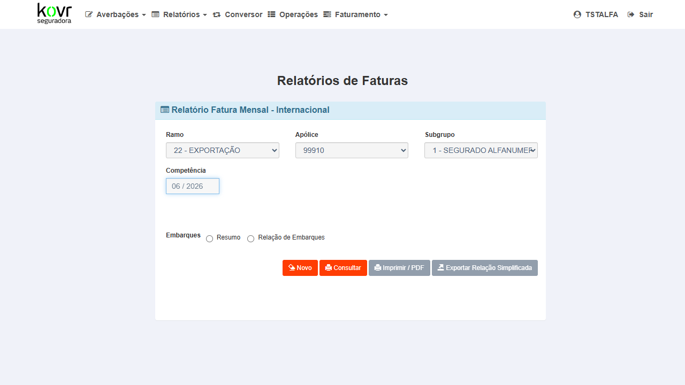
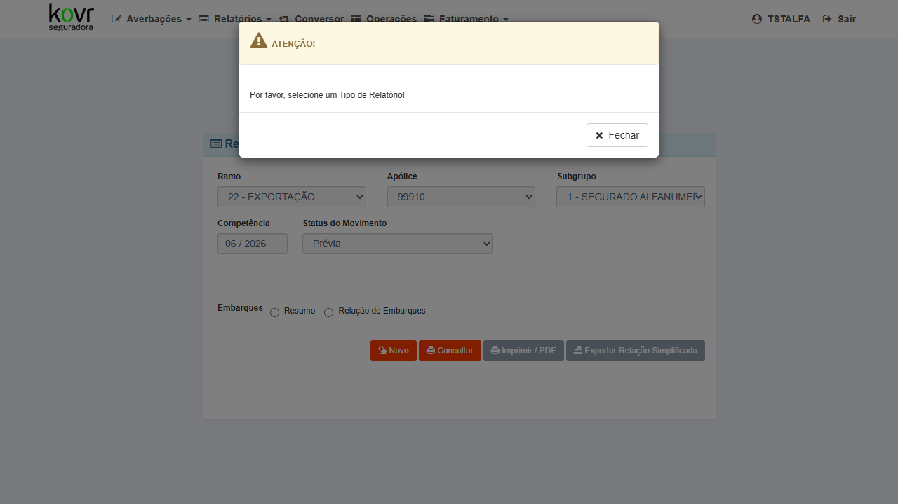
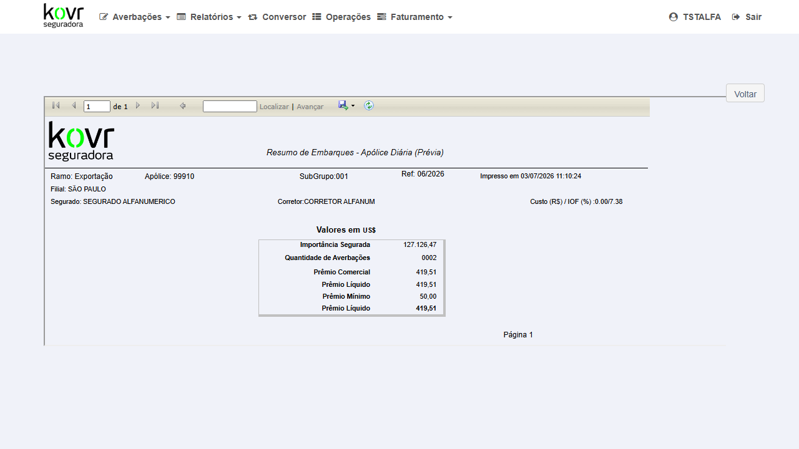
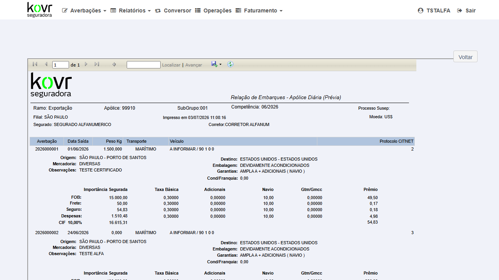
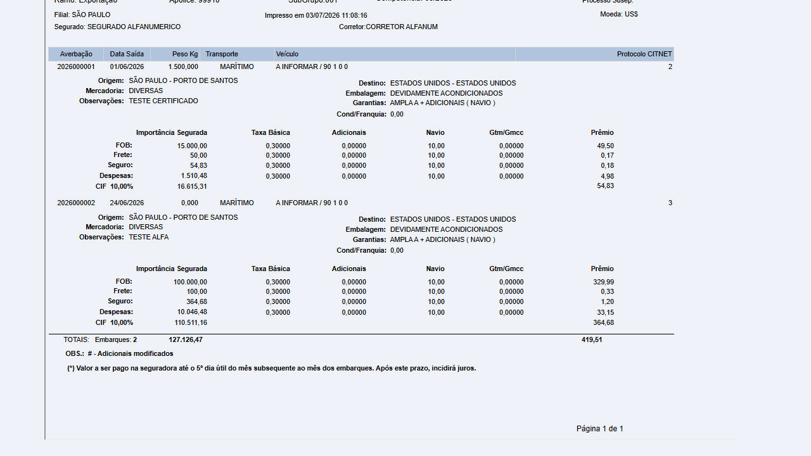
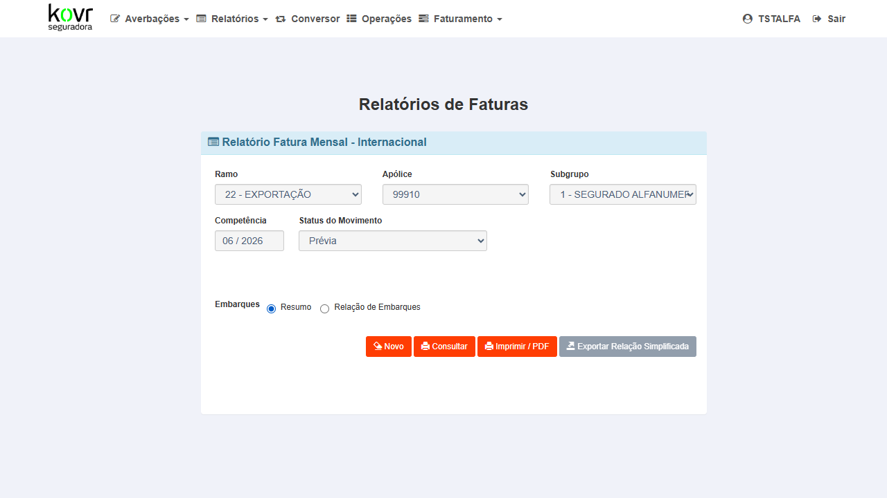
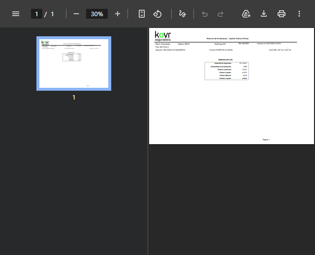

Verificar que após o fix o campo CNPJ é preenchido na tela de Consulta Resumo de Embarques, não ficando mais em branco.
Login como Segurado na URL ALFA KOVR. Apólice 99999 / subgrupo 001 com averbações em 06/2026.
- Acessar
https://kovr-hml-faturamento.nsseg.com.br/alfa/citnet/e realizar login com perfil Segurado - Navegar até o módulo Relatórios no menu principal
- Clicar em "Resumo de Embarques"
- Preencher: Apólice =
99999, Subgrupo =001, Referência =06/2026 - Clicar em "Consultar" (ou botão equivalente)
- Localizar o campo CNPJ no resultado exibido na tela
D77L6VWV000116 — não em branco. Nenhum erro na tela.Campo CNPJ aparecia vazio (em branco) na mesma consulta antes da correção.





Verificar que após o fix o campo CNPJ é preenchido na tela de Consulta Relação de Embarques.
Login como Segurado na URL ALFA KOVR. Averbação cadastrada para apólice 99999 / subgrupo 001 em 06/2026 (obrigatório para Relação de Embarques).
- Acessar
https://kovr-hml-faturamento.nsseg.com.br/alfa/citnet/e realizar login com perfil Segurado - Navegar até o módulo Relatórios no menu principal
- Clicar em "Relação de Embarques"
- Preencher: Apólice =
99999, Subgrupo =001, Referência =06/2026 - Clicar em "Consultar" (ou botão equivalente)
- Localizar o campo CNPJ no resultado exibido na tela
D77L6VWV000116 — não em branco. Nenhum erro na tela.Campo CNPJ aparecia vazio (em branco) antes da correção.


Verificar que o campo CNPJ aparece corretamente no documento PDF gerado pela impressão do Resumo de Embarques.
CT-EMB-001 executado com sucesso (consulta funcional). Mesmos dados de massa.
- A partir da tela Fatura Mensal Internacional (apólice 99910, subgrupo 001, ref 06/2026), selecionar radio "Resumo" e clicar "Imprimir / PDF"
- Aguardar a geração do relatório PDF
- Localizar o campo CNPJ no documento gerado
D77L6VWV000116 no PDF/relatório. Nenhum campo em branco onde CNPJ deveria aparecer.Campo CNPJ aparecia em branco no documento impresso/PDF antes da correção.



Verificar que o campo CNPJ aparece corretamente no documento PDF gerado pela impressão da Relação de Embarques.
CT-EMB-002 executado com sucesso (consulta funcional). Averbação cadastrada no período.
- A partir da tela de Consulta Relação de Embarques (apólice 99999, subgrupo 001, ref 06/2026), clicar em "Imprimir" (ou "PDF" / "Exportar")
- Aguardar a geração do relatório (PDF ou preview de impressão)
- Localizar o campo CNPJ no documento gerado
D77L6VWV000116 no PDF/relatório. Nenhum campo em branco onde CNPJ deveria aparecer.Campo CNPJ aparecia em branco no documento impresso/PDF antes da correção.
Verificar que o fix no método PreencheParametrosReport_RCV não afetou outros campos exibidos nos relatórios (segurado, apólice, subgrupo, referência, valores, datas).
CT-EMB-001 e CT-EMB-002 executados com sucesso.
- Na tela de Resumo de Embarques (mesma consulta do CT-EMB-001), verificar os demais campos: nome do segurado, número da apólice, subgrupo, referência, total de embarques e valores
- Na tela de Relação de Embarques (mesma consulta do CT-EMB-002), verificar: lista de averbações, datas, valores unitários e totais
- Nos PDFs gerados nos CTs 003 e 004, confirmar que todos os campos aparecem completos e sem truncamento